Advisor · Advanced
PHARMACIST RESEARCH · CLASS 02
หลักสูตรพัฒนางานวิจัยสำหรับเภสัชกร
เขตสุขภาพที่ 10 · รุ่นที่ 2 · ประจำปี 2569
โดย คณะกรรมการพัฒนาระบบเภสัชกรรม (Chief Pharmacy Officer) เขตสุขภาพที่ 10 ร่วมมือกับ คณะเภสัชศาสตร์ มหาวิทยาลัยอุบลราชธานี
จุดประกายความรู้
สู่งานวิจัย
ที่สร้างการเปลี่ยนแปลง.
ต่อยอดความรู้ เชื่อมเครือข่าย และพัฒนางานเภสัชกรรม
เพื่อความปลอดภัยด้านยาและสุขภาพของประชาชน
ร่วมขับเคลื่อนงานวิจัยและพัฒนางานเภสัชกรรม
ที่ปรึกษาหลักสูตร
ดร.ศักดิ์สิทธิ์ ศรีภา
คณบดีคณะเภสัชศาสตร์
และอาจารย์ประจำคณะเภสัชศาสตร์
มหาวิทยาลัยอุบลราชธานี
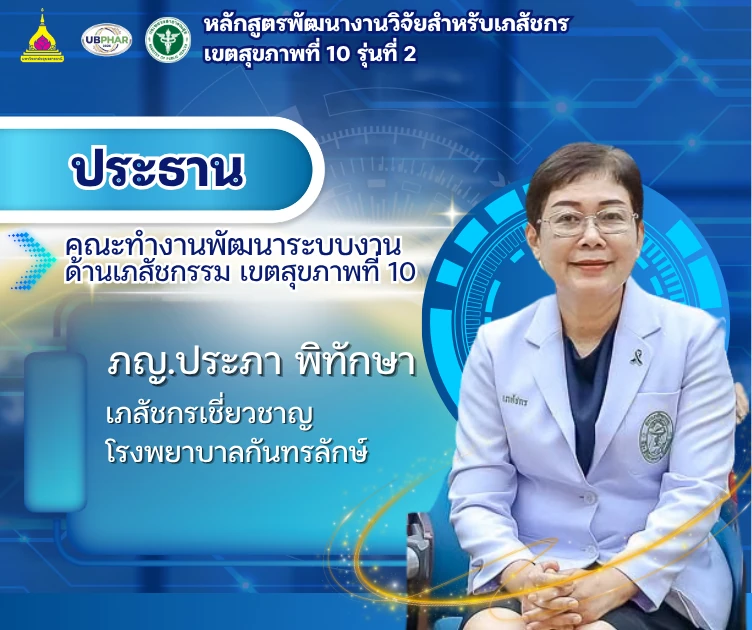
ประธาน CPO
เขตสุขภาพที่ 10
ภญ.ประภา พิทักษา
เภสัชกรเชี่ยวชาญ
โรงพยาบาลกันทรลักษ์
เขตสุขภาพที่ 10
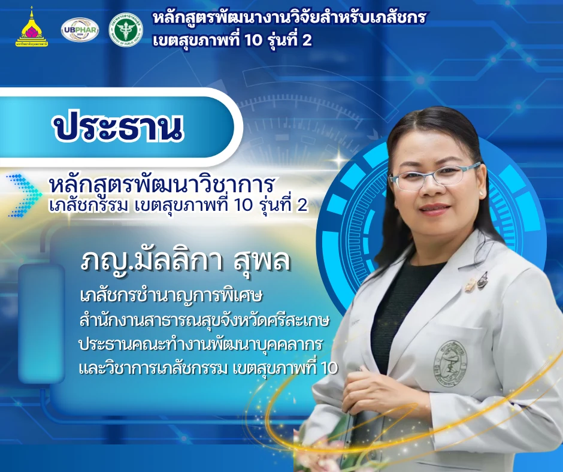
ประธานหลักสูตร
ภญ.มัลลิกา สุพล
เภสัชกรชำนาญการพิเศษ
สำนักงานสาธารณสุขจังหวัดศรีสะเกษ
จากการเรียนรู้ สู่ผลงานที่ใช้ได้จริงเลื่อนเพื่อสำรวจ ↓
80คน
เครือข่ายนักวิจัย
02ระดับ
Basic & Advanced
16กลุ่ม
เรียนรู้และเติบโตไปด้วยกัน
MEET YOUR MENTORS
ทีมที่ปรึกษาที่เติบโตไปกับคุณ
รู้จัก Advisor และ Co-Advisor ประจำหลักสูตร
คลิกที่ภาพเพื่อดูรายละเอียดให้ชัดขึ้น
Advisor · Advanced
กลุ่มที่ 2
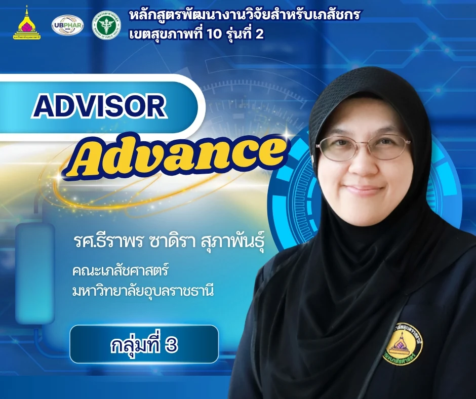
Advisor · Advanced
กลุ่มที่ 3
Advisor · Advanced
กลุ่มที่ 4
Advisor · Advanced
กลุ่มที่ 5
Advisor · Advanced
กลุ่มที่ 6
Advisor · Basic
กลุ่มที่ 1
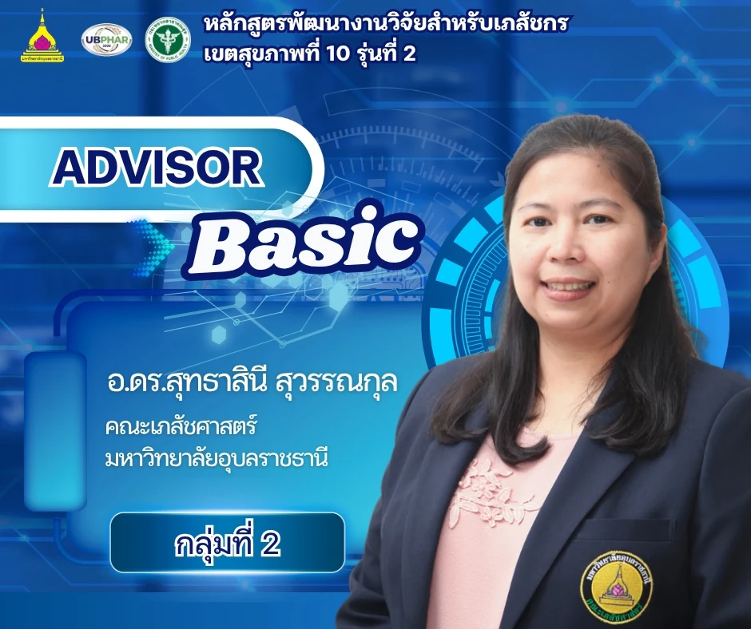
Advisor · Basic
กลุ่มที่ 2
Advisor · Basic
กลุ่มที่ 3
Advisor · Basic
กลุ่มที่ 4
Advisor · Basic
กลุ่มที่ 5
Advisor · Basic
กลุ่มที่ 6
Advisor · Basic
กลุ่มที่ 7
Advisor · Basic
กลุ่มที่ 8
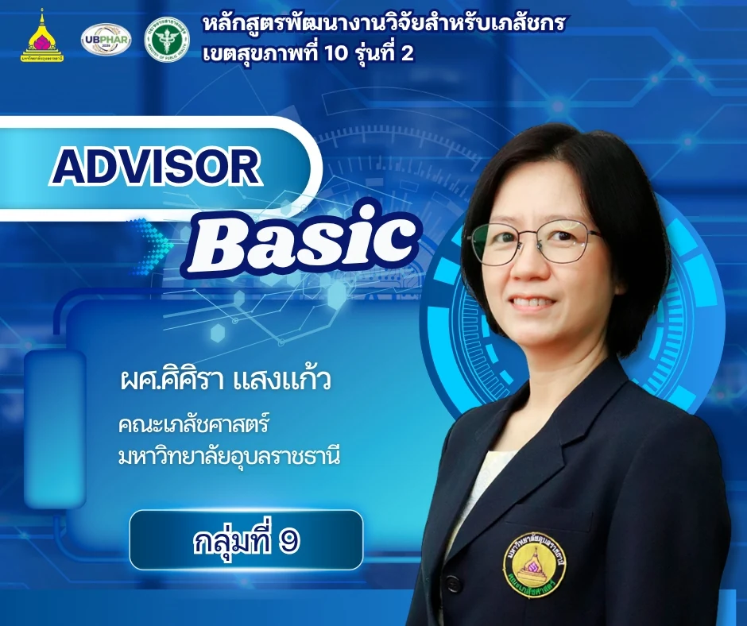
Advisor · Basic
กลุ่มที่ 9
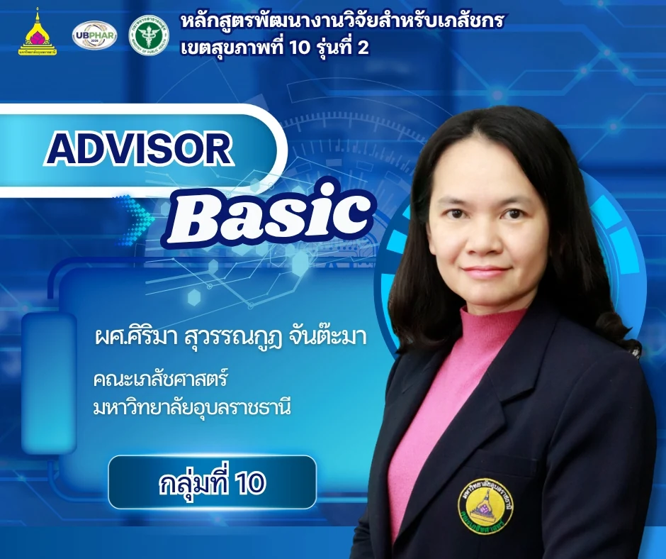
Advisor · Basic
กลุ่มที่ 10
Co-Advisor · Advanced
กลุ่มที่ 1
Co-Advisor · Advanced
กลุ่มที่ 2
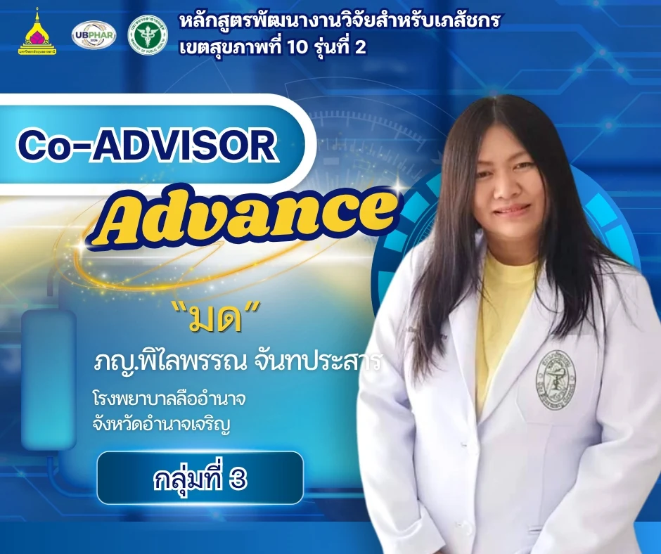
Co-Advisor · Advanced
กลุ่มที่ 3
Co-Advisor · Advanced
กลุ่มที่ 4
Co-Advisor · Advanced
กลุ่มที่ 5
Co-Advisor · Advanced
กลุ่มที่ 6
Co-Advisor · Basic
กลุ่มที่ 1
Co-Advisor · Basic
กลุ่มที่ 2
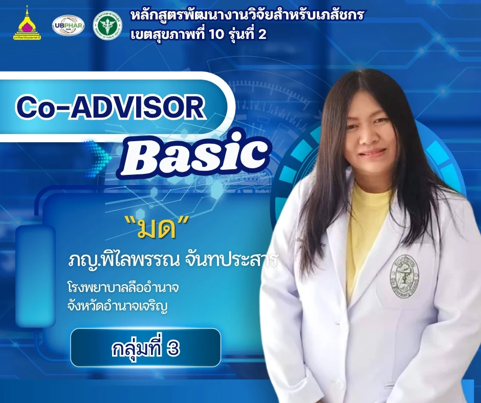
Co-Advisor · Basic
กลุ่มที่ 3
Co-Advisor · Basic
กลุ่มที่ 4
Co-Advisor · Basic
กลุ่มที่ 5
Co-Advisor · Basic
กลุ่มที่ 6
Co-Advisor · Basic
กลุ่มที่ 7
Co-Advisor · Basic
กลุ่มที่ 8
Co-Advisor · Basic
กลุ่มที่ 9
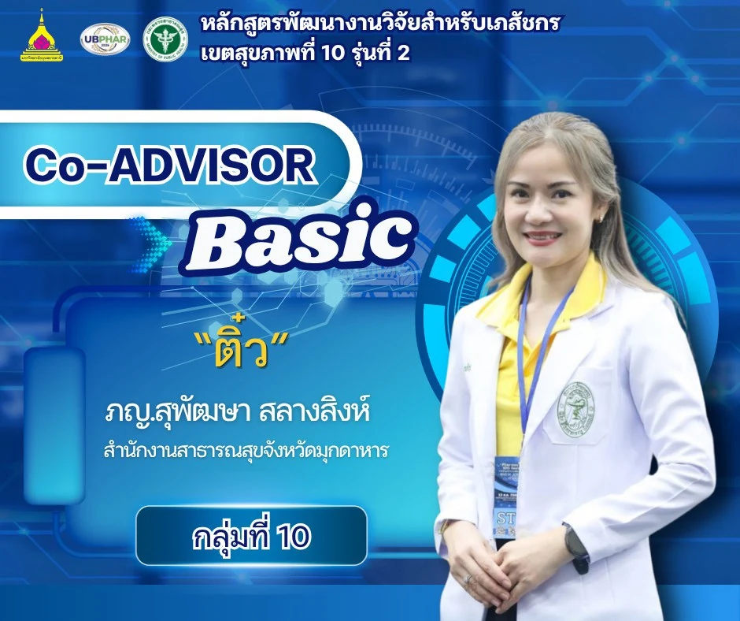
Co-Advisor · Basic
กลุ่มที่ 10
ผู้จัดการหลักสูตร
กิ๊ฟ
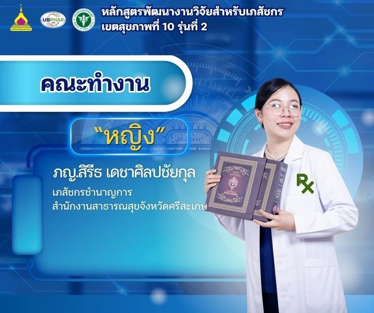
คณะทำงาน
หญิง
ผู้ประสานงาน
ภูมิ
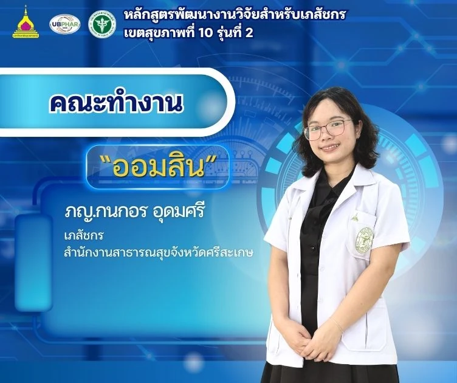
คณะทำงาน
ออมสิน
คณะทำงาน
กุ้ง
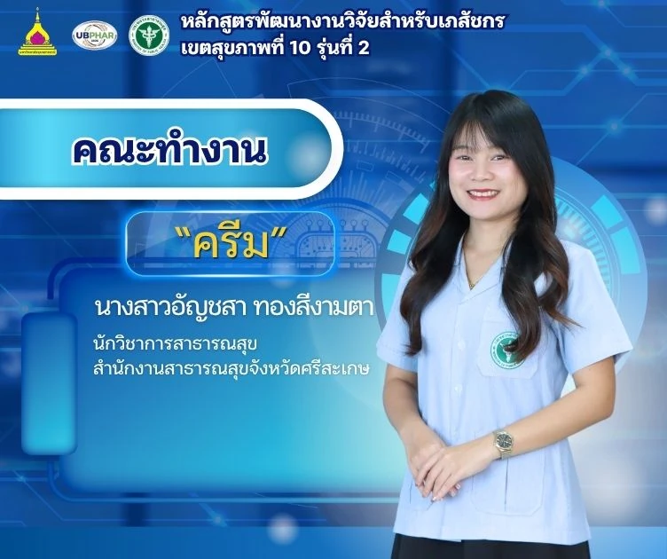
คณะทำงาน
ครีม
เลือกดูทีมที่ปรึกษาและคณะทำงาน
YOUR RESEARCH JOURNEY
ทุกก้าวของงานวิจัย
เริ่มต้นได้ที่นี่
เข้าถึงความรู้และผลงานได้อย่างสะดวก
เลือกพื้นที่ที่คุณต้องการ แล้วเริ่มต้นไปด้วยกัน
01 / LEARNING
คลังเอกสารการเรียน
เอกสารประกอบหลักสูตรและสื่อการเรียนรู้
พร้อมให้เปิดอ่านและดาวน์โหลด
รู้จักเครือข่ายนักวิจัย
พบกับนักวิจัย Basic และ Advanced
พร้อมพื้นที่รวบรวมผลงานรายบุคคล
ห้องเรียนวิดีโอ
ทบทวนเนื้อหาและเรียนรู้เพิ่มเติม
ตามจังหวะที่เหมาะกับคุณ
LEARN. CONNECT. GROW.
ร่วมเป็นส่วนหนึ่ง
ของการพัฒนางานวิจัย
หลักสูตรพัฒนางานวิจัยสำหรับเภสัชกร
เขตสุขภาพที่ 10 รุ่นที่ 2 ประจำปี 2569
✧
พัฒนาศักยภาพด้านการวิจัย
เพื่อยกระดับงานเภสัชกรรมและการดูแลสุขภาพ
A COMMUNITY OF RESEARCHERS
ต่างประสบการณ์
เป้าหมายเดียวกัน
เลือกกลุ่มหลักสูตร เพื่อทำความรู้จักสมาชิก
และเข้าถึงโฟลเดอร์ผลงานของแต่ละคน